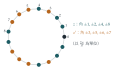

STEP II 1991，第 4 題
繼續之前，請先閱讀題目（原題為英文）。題目載於 STEP Support Programme 的題目資料庫： step.maths.org/questions/91-s2-q4
引子
1796 年 3 月 30 日，哥廷根（Göttingen）一名十八歲的學生在他的數學日記寫下了第一則記錄，這本日記他此後寫了一輩子。他發現了怎樣用尺規作圖（ruler and compasses construction）作出正 \(17\) 邊形。古希臘人早已懂得作出邊數為 \(3\)、\(4\)、\(5\) 和 \(15\) 的正多邊形（regular polygon），以及邊數為這些數目反覆加倍的正多邊形，但其後兩千年間，再沒有人添上任何一個新的。高斯（Carl Friedrich Gauss）後來說，正是這項發現令他決心成為數學家，而不是語文學家；相傳他還曾要求在自己的墓碑上刻一個正 \(17\) 邊形。
這個作圖法的核心，就是本題的後半部分：四個特定餘弦之和等於 \(\frac{\sqrt{17} - 1}{4}\)，這個數只涉及一個平方根。由平方根構成的長度都可以用尺規作出，而高斯再用三個同類的步驟，就能作出 \(\cos\frac{2\pi}{17}\) 本身。
動筆之前
為甚麼一道關於正 \(17\) 邊形的題目，第一部分卻是關於 \(\cos\frac{2\pi}{5}\) 的？
那是熱身，把同一個想法用在較小的多邊形上。對正五邊形（pentagon）而言，和 \(\cos\phi + \cos 2\phi\) 滿足一條有理係數的二次方程（quadratic），所以解一條二次方程就能求出它。對正 \(17\) 邊形而言，四個餘弦之和 \(z\) 原來也滿足一條二次方程。兩種情況的竅門都是把餘弦相乘，再用 \(\cos A\cos B = \frac12\bigl(\cos(A + B) + \cos(A - B)\bigr)\) 把乘積變回同一批角的餘弦之和。
逐步解題
階段 1 正五邊形
展開 \(y^2 = (\cos\phi + \cos 2\phi)^2\)，把每個乘積化為和，再利用 \(5\phi = 2\pi\) 化簡 \(3\phi\) 和 \(4\phi\) 這類角。
\[y^2 = \cos^2\phi + 2\cos\phi\cos2\phi + \cos^2 2\phi = \tfrac12(1 + \cos 2\phi) + (\cos 3\phi + \cos\phi) + \tfrac12(1 + \cos 4\phi).\] 由於 \(5\phi = 2\pi\)，有 \(\cos 3\phi = \cos(2\pi - 2\phi) = \cos 2\phi\) 和 \(\cos 4\phi = \cos\phi\)。所以 \[y^2 = 1 + \tfrac12(\cos\phi + \cos2\phi) + (\cos\phi + \cos 2\phi) = 1 + \tfrac32 y,\] 即 \(2y^2 = 3y + 2\)。■ 方程 \(2y^2 - 3y - 2 = (2y + 1)(y - 2) = 0\) 的根是 \(y = 2\) 和 \(y = -\frac12\)。但 \(y = 2\) 需要兩個餘弦都等於 \(1\)，而事實並非如此，所以 \(y = -\frac12\)。■
階段 2 十七次單位根之和為零
\(\sum_{k=0}^{16}\cos k\theta\) 是 \(\sum_{k=0}^{16}\omega^k\) 的實部（real part），其中 \(\omega = e^{\mathrm{i}\theta}\) 是一個 \(17\) 次本原單位根（primitive root of unity）。這個等比級數（geometric series）等於 \(\frac{\omega^{17} - 1}{\omega - 1} = 0\)。■
所以 \(\sum_{k=1}^{16}\cos k\theta = -1\)。由於 \(\cos(17 - k)\theta = \cos k\theta\)，各項可以兩兩配對，於是 \[\sum_{k=1}^{8}\cos k\theta = -\tfrac12.\]
階段 3 把餘弦分成兩組
設 \(z = \cos\theta + \cos2\theta + \cos4\theta + \cos8\theta\)，並設 \(z'\) 為其餘四個餘弦之和 \(\cos3\theta + \cos5\theta + \cos6\theta + \cos7\theta\)。\(z + z'\) 是多少？
由第 2 階段，\(z + z' = -\frac12\)。如果還能求出 \(zz'\)，那麼 \(z\) 和 \(z'\) 就是某條二次方程的兩個根。
計算 \(zz'\)。把它展開成 \(16\) 個乘積 \(\cos a\theta\cos b\theta\)，把每個乘積化為兩個餘弦之和，然後數一數 \(\cos\theta, \cos2\theta, \ldots, \cos8\theta\) 各出現多少次。（利用 \(\cos k\theta = \cos(17 - k)\theta\) 和 \(\cos(-k\theta) = \cos k\theta\) 化簡各角。）
每個乘積給出 \(\cos a\theta\cos b\theta = \frac12\bigl(\cos(a + b)\theta + \cos(a - b)\theta\bigr)\)，所以 \(zz'\) 是 \(32\) 個餘弦之和的 \(\frac12\) 倍。逐一考慮 \(a \in \{1, 2, 4, 8\}\) 和 \(b \in \{3, 5, 6, 7\}\) 的 \(16\) 對組合：例如 \(a = 1\)、\(b = 3\) 給出 \(\cos4\theta\) 和 \(\cos2\theta\)；\(a = 8\)、\(b = 7\) 給出 \(\cos15\theta = \cos2\theta\) 和 \(\cos\theta\)。對全部十六對都這樣做，\(\cos\theta, \ldots, \cos8\theta\) 每一個都恰好出現四次。因此 \[zz' = \tfrac12 \times 4 \times \sum_{k=1}^{8}\cos k\theta = 2 \times \left(-\tfrac12\right) = -1.\]
階段 4 二次方程
所以 \(z\) 和 \(z'\) 是 \(t^2 + \frac12 t - 1 = 0\) 的兩個根，即 \(4t^2 + 2t - 4 = 0\)，其根為 \(t = \frac{-1 \pm \sqrt{17}}{4}\)。哪一個是 \(z\)？按數值計算，\(\cos\theta \approx 0.932\)、\(\cos2\theta \approx 0.739\)、\(\cos4\theta \approx 0.092\) 和 \(\cos8\theta \approx -0.983\)，所以 \(z \approx 0.78 > 0\)。因此 \[z = \frac{-1 + \sqrt{17}}{4} = -\frac{1 - \sqrt{17}}{4}. \qed\]
回顧
積化和。餘弦的積化和公式把 \(y^2\) 和 \(zz'\) 變成同一批餘弦之和，於是代數運算得以自成一體。
和與積給出二次方程。知道 \(z + z'\) 和 \(zz'\)，就等於知道以 \(z\) 和 \(z'\) 為根的二次方程。
分組要分得對。把八個餘弦分成 \(\{1, 2, 4, 8\}\) 和 \(\{3, 5, 6, 7\}\)，令每個指標在 \(zz'\) 中出現的次數相同。隨意分組是行不通的。
背後的數學
為甚麼是 \(\{1, 2, 4, 8\}\)？以 \(17\) 為模（modulo），\(3\) 的冪 \(3^0, 3^1, 3^2, \ldots\) 會走遍所有非零剩餘（residue）： \[1, 3, 9, 10, 13, 5, 15, 11, 16, 14, 8, 7, 4, 12, 2, 6.\] 每隔一個取一個，即 \(3^0, 3^2, 3^4, \ldots\)，得出 \(1\)、\(9\)、\(13\)、\(15\)、\(16\)、\(8\)、\(4\)、\(2\)，以 \(17\) 為模就是 \(\pm1\)、\(\pm2\)、\(\pm4\)、\(\pm8\)：正好是 \(z\) 中的角。另一半給出 \(\pm3, \pm5, \pm6, \pm7\)，即 \(z'\) 中的角。高斯把 \(\omega^k\) 在這類剩餘類上的和稱為週期（periods）。由於 \(17 - 1 = 16 = 2^4\)，這些剩餘可以對分四次，而在每一階段，週期都滿足一些二次方程，其係數涉及上一階段的週期。四條二次方程，也就是四個平方根，就從有理數一路通往 \(\cos\frac{2\pi}{17}\)： \[\begin{gathered} \cos\tfrac{2\pi}{17} = \tfrac{1}{16}\Bigl(-1 + \sqrt{17} + \sqrt{34 - 2\sqrt{17}} \\ {} + 2\sqrt{17 + 3\sqrt{17} - \sqrt{34 - 2\sqrt{17}} - 2\sqrt{34 + 2\sqrt{17}}}\Bigr). \end{gathered}\] 每一步都只涉及平方根，而平方根可以用尺規作出（利用相似三角形或半圓），所以正 \(17\) 邊形是可作圖（constructible）的。

哪些正多邊形可以作圖？
高斯斷言，而 Pierre Wantzel 在 1837 年證明：正 \(n\) 邊形可以用尺規作出，當且僅當 \(n\) 是 \(2\) 的冪乘以若干個互不相同的費馬質數（Fermat primes）之積，費馬質數即形如 \(2^{2^m} + 1\) 的質數。已知的費馬質數有 \(3\)、\(5\)、\(17\)、\(257\) 和 \(65537\)，它們是 第 1.1 節 中的費馬數。（費馬（Fermat）猜想所有這類數都是質數，但歐拉（Euler）證明了 \(2^{32} + 1\) 可被 \(641\) 整除，而此後再沒有人找到其他費馬質數。）所以正 \(257\) 邊形和正 \(65537\) 邊形都可以作圖；十九世紀時，Johann Hermes 花了大約十年時間推算出正 \(65537\) 邊形的作圖法，他的手稿現存於哥廷根。正 \(7\) 邊形和正 \(11\) 邊形不可作圖，因為 \(7\) 和 \(11\) 不是費馬質數（\(7 - 1 = 6\) 和 \(11 - 1 = 10\) 都不是 \(2\) 的冪）；正 \(9\) 邊形也不可作圖，因為 \(9 = 3^2\) 把費馬質數 \(3\) 重複了。Wantzel 的證明用到 第 6.3 節 中關於域次數（field degrees）的理論。
思維技巧
要求出一個量，可以為它配上一個自然的夥伴，計算兩者的和與積，再解由此得出的二次方程。
箇中的藝術在於選對夥伴，使和與積都算得出來。這裏的夥伴來自以 \(17\) 為模的剩餘的對稱性，而把這個想法重複四次，就得出高斯的作圖法。
延伸練習
正七邊形（heptagon）。試做 STEP II 1995，第 6 題。這道題把高斯將單位根分組的想法用於七次單位根，並求出餘弦之和與正弦之和的準確值。判斷正弦之和的正負號是當中最微妙的一步。
正五邊形。證明 \(\cos\frac{2\pi}{5} = \frac{\sqrt5 - 1}{4}\)，並由此描述一個正五邊形的尺規作圖法。
另一個週期。用數值驗證 \(z' = \cos3\theta + \cos5\theta + \cos6\theta + \cos7\theta = \frac{-1 - \sqrt{17}}{4}\)。
生成元（generators）。證明以 \(17\) 為模時，\(3\) 的冪給出所有非零剩餘，但 \(2\) 的冪卻不然。\(2\) 的冪給出哪些剩餘？
延伸閱讀
Ian Stewart, Galois Theory（CRC Press）。當中有一章講述尺規作圖和正 \(17\) 邊形。
Richard Courant & Herbert Robbins, What Is Mathematics?（Oxford University Press）。第 3 章以淺白優美的筆觸介紹作圖問題，包括正 \(17\) 邊形。
Daniel Kehlmann, Measuring the World（Quercus）。一本關於高斯和洪堡（Alexander von Humboldt）的詼諧小說，可作輕鬆讀物。